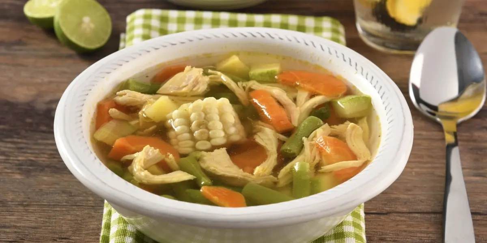
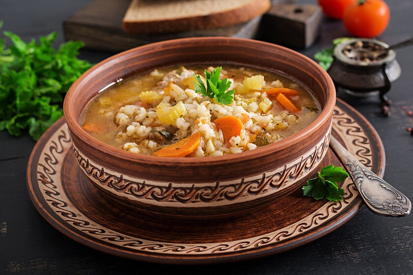
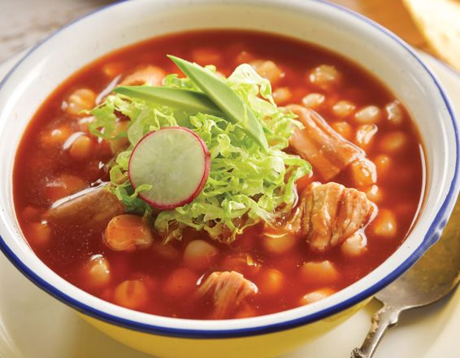

Caldo de pollo con verduras.
Preparado con piezas de pollo (pollo deshebrado opcional), con trozos de zanahoria, ejote, papa, elote, calabaza, cebolla picada, chayote, aguacate y limon.

Costo de cada plato: $82 pesos.
Caldo de Res.
Preparado con chamberete o costilla de Res (carne deshebrada opcional), con trozos de zanahoria, elote, chayote, papa, calabacita, repollo, chile serrano (al gusto), cebolla, cilantro y limon.

Costo de cada plato: $85 pesos.
Consome de Garbanzo.
Preparado con garbanzo en caldo de pollo con un poco de jitomate, zanahoria, papa, cebolla, apio, cilantro y limon.

Costo de cada plato: $76 pesos.
Pozole rojo con carne de puerco.
Preparado con maiz blanco con caldo de carne de puerco con chile huajillo, rabanos, cebolla, lechuga, limon y oregano.

Costo de cada plato: $88 pesos.
Mole de Olla
Preparado con axiote, chile huajillo, carne de pollo (o de cerdo), con chayote, calabaza, papa, elote y limon.

Costo de cada plato: $84 pesos.